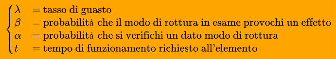

Manutenzione dei sistemi di produzione
La manutenzione è un elemento fondamentale per gli impianti di produzione; essa è definita come controlli costanti sull'impianto, insieme a lavori di riparazione e revisioni che sono necessari per assicurare il corretto funzionamento degli impianti produttivi.
Ci sono diverse politiche di manutenzione, che andiamo ad elencare:
Politiche di manutenzione
Manutenzione correttiva
Questo tipo di manutenzione si applica dopo un guasto: la macchina viene fermata e quindi riparata. Lo scopo è quello di riportare la macchina (entità) allo stato in cui è possibile il corretto funzionamento.
Questo tipo di manutenzione ha dei fattori negativi: andiamo infatti a perdere dei ricavi, perdita dovuta al fermo improvviso delle macchine. Ci conviene quindi applicare questo tipo di manutenzione solo se il fermo macchina non comporta gravi perdite e se l'opera di manutenzione è "semplice".
Manutenzione migliorativa
Questo tipo di manutenzione consiste nella modifica ad apparecchiature e macchinari funzionanti, allo scopo di migliorare le loro prestazioni.
Questo tipo di manutenzione mira ad ottimizzare le prestazioni delle apparecchiature ed a ridurre i tempi di fermo macchina.
Manutenzione preventiva
Questo tipo di manutenzione viene eseguita ad intervalli predeterminati o in accordo a criteri prescritti in modo da ridurre le probabilità di guasto.
Si basa sulla sostituzione programmata di un determinato componente ancora funzionante della macchina (ma possibilmente usurato e prossimo alla rottura) in modo da prevenire i guasti prima che si verifichino.
I componenti da sostituire vengono scelti a seconda di parametri - limiti di componenti: ad esempio ogni lampadina ha una durata in ore, oltre le quali la lampadina potrebbe smettere di funzionare da un momento all'altro.
Manutenzione predittiva
Questa manutenzione si basa sulla capacità di prevedere un guasto, quindi dal riconoscimento di un'anomalia che porterà inevitabilmente al guasto di un componente.
Abbiamo quindi bisogno di un servizio di informazione e di strumenti informativi sullo stato del macchinario.
Manutenzione produttiva
La filosofia dietro questo tipo di manutenzione si basa sul continuo miglioramento delle prestazioni assegnando alcune attività agli operatori delle macchine: l'obbiettivo è quello di permettere agli operatori stessi di identificare e risolvere i problemi di manutenzione.
Manutenzione centrata sull'affidabilità
Questo tipo di manutenzione prevede l'utilizzo di tecniche di analisi dei sistemi come la Reliability Centered Maintenance - RCM.
Questa analisi RCM prevede l'esecuzione in successione dei seguenti step:
- Scomposizione fisica del sistema in moduli, mettendone in evidenza le interconnessioni.
- Scomposizione funzionale.
- Scomposizione affidabilistica.
- Analisi dei modi di guasto.
- Analisi delle criticità.
- Selezione di una strategia di manutenzione.
- Piano delle attività di manutenzione.
L'RCM, attraverso un'accurata analisi del sistema e dei componenti, valutando i modi di guasto, consente di scegliere la migliore politica manutentiva per ciascun elemento
FMEA e FMECA
Gli approcci che si basano sui concetti della manutenzione centrata sull'affidabilità sono scostituiti dalla metodologia FMEA - Failure Modes and Eccets Analysis e dalla metodologia FMECA - Failure Modes, Effects abd Criticity Analysis.
Metodologia FMEA
Pagina 238
E' un processo sistematico utile per identificare e prevenire errori di progettazione in modo da eliminarli o limitare il rischio a loro associato.
La metodologia FMEA si compone di tre fasi:
- La prima fase è qualitativa ed analizza tutti i possibili modi di guasto o rottura, valutandone anche gli effetti che possono verificarsi (rispecchiandosi sul prodotto finale).
- La seconda fase è quantitativa ed ha come obbiettivo quello di quantificare effettivamente la pericolosità della terna causa - modo - effetto.
- La terza fase è correttiva ed individua le possibili azioni correttive mirate a ridurre la pericolosità e la criticità della modalità di rottura.
Metodologia FMECA
Pagina 241
Questa tipologia consiste nel suddividere i possibili effetti delle varie modalità di rottura in quattro classi di gravità:
- Catastrofica
- Critica
- Marginale
- Minore
Possiamo calcolare l'indice di criticità mediante la formula:

Dove ogni variabile significa:

andiamo quindi a calcolare Ic (indice di criticità) complessivo dei modi di rottura per ogni classe di gravità e si sommano gli indici di criticità di tutti i modi di rottura della classe.
Differenza tra guasto ed avaria
Si deduce che il guasto è un evento, ovvero un passaggio da uno stato di corretto funzionamento ad uno stato che non permette di rispettare le prestazioni prestabilite.
L'avaria è uno stato vero e proprio, in cui la macchina non è in grado di operare.
Approcci quantitativi per la manutenzione
Teoria dell'affidabilità
L'affidabilità di un elemento p definita come la probabilità che l'elemento funzioni senza guastarsi per un certo tempo t in determinate condizioni ambientali.
L'elemento in esame può assumere due stati:
- Funzionamento buono
- Funzionamento cattivo
Ovviamente dobbiamo stabilire un criterio per stabilire se l'elemento è funzionante o meno, inoltre devono essere stabilite anche le condizioni ambientali che si devono mantenere costanti durante il tempo prestabilito (ovvero l'arco temporale in cui ci aspettiamo che il componente funzioni correttamente).
Definiamo la variabile T - tempo fino al guasto di un elemento che ci dice il tempo che intercorre tra l'istante iniziale in cui si avvia la valutazione dell'affidabilità e l'istante in cui l'elemento si rompe.
Definiamo una densità di probabilità di guasto una funzione f(t) tale che la probabilità infinitesima che l'elemento si guasti al tempo t o in un suo introno infinitesimo (praticamente t) sia:

In altre parole, la probabilità che il componente si guasti rappresenta l'area sottesa alla curva in un intervallo che va da t a t + dt:

Densità di probabilità di guasto - PDF
Sappiamo che l'area sottesa di una PDF vale 1 (probabilità di normalizzazione vista nell'esame di fondamenti di telecomunicazioni), possiamo dire che se calcoliamo un intervallo di tempo infinito la probabilità che un qualsiasi elemento si guasti è 1, ovvero certa.
Possiamo a questo punto calcolare diversi dati:
- Probabilità che l'elemento si guasti entro un certo tempo: ci basta calcolare l'area sottesa alla curva fino al momento t, ovvero l'integrale tra zero e t della funzione:

- Probabilità che l'elemento funzioni dopo un certo tempo: ci basta calcolare l'area sottesa alla curva da t a più infinito; questo non possiamo farlo perchè c'è un asintoto, per cui sottraiamo ad 1 (probabilità certa, ovvero l'area di tutta la curva), la probabilità che l'elemento arrivi sano fino al tempo t.
Leggi statistiche della durata di vita
Per un sistema meccanico complesso possiamo individuare tre fasi di vita principale:
- Mortalità infantile
- Vita utile
- Senilità / usura
Mortalità infantile
Mettiamo in funzionamento al tempo T = 0 delle macchine nuove; di conseguenza se nella popolazione di componenti ci sono dei pezzi affetti da errori di progettazione e quindi di struttura più debole, questi si andranno a guastare quasi subito.
La curva λ(t) indicherà quindi alti valori del tasso di guasto.
Questo periodo è detto mortalità infantile proprio perchè è il periodo di vita iniziale dei componenti: ad esempio nel caso automobilistico, ogni modello pre serie viene testato in pista in modo da identificare tutti quei pezzi affetti da errori di produzione; ogni volta che se ne scopre uno lo si corregge.
Di conseguenza la curva λ(t) avrà valori molto alti inizialmente, ma via via che si correggono i pezzi, questa curva scenderà, assumendo un aspetto del genere:

I parametri alpha e beta sono:
- Apha - Caratteristica
- Beta - Parametro di forma
Man mano che si va avanti nel tempo il valore si stabilizza fino a diventare costante.
Vita utile
Come abbiamo visto, dopo un certo periodo di tempo, i componenti prima o poi raggiungono un tasso di guasto basso e costante; il periodo di tempo in cui il tasso rimane costante viene detto vita utile:

Siccome l'affidabilità è l'area sottesa alla curva in un dato intervallo, con il passare del tempo questa non è ovviamente costante (a differenza della funzione).
Senilità o usura
Quando i componenti raggiungono l'età Tu ha inizio il fenomeno dell'usura: da questo momento in poi il tasso di guasto cresce rapidamente. Otteniamo quindi la curva finale, detta curva a vasca da bagno:

Le politiche di manutenzione nelle fasi di vita di un prodotto
Possiamo quindi identificare le diverse politiche di manutenzione nelle diverse fasi di vita di un prodotto:
- Mortalità infantile - In questo caso la politica di manutenzione è di tipo migliorativa
- Vita utile - Manutenzione di tipo preventiva - ciclica. Anche un pizzico di migliorativa
- Usura - Preventiva. Si sostituiscono i componenti a rischio rottura.
Tempi della manutenzione
Da pagina 257
Un intervento di manutenzione comporta un costo che deriva non solo dall'intervento stesso, ma anche dal tempo in cui la macchina non produce; diventa quindi importante riuscire a calcolare il tempo legato ad un intervento di manutenzione.
Manutenzione a guasto
Nel caso di manutenzione a guasto (ovvero quelle attività di manutenzione che si verificano solo dopo un guasto), definiamo il tempo medio fino al guasto - MTTF (Mean Time Till Failure) che viene calcolato con il seguente integrale:
Possiamo anche integrare la probabilità che l'elemento funzioni dopo un certo tempo:

Sistemi riparabili
Il caso che analizzeremo è quello in cui si parla di tempo medio tra due guasti, ovvero Mean Time Between failures - MTBF e possiamo calcolarlo con la seguente formula:

Possiamo Rappresentare su un diagramma temporale le fasi della riparazione:

Dove:
- MTTR - Mean Time To Repair ovvero il tempo medio che richiede la riparazione
- td - tempo di diagnosi del guasto
- ta - tempo di attivazione dell'intervento, ovvero il tempo richiesto dalla squadra di riparazioni per sopraggiungere
- tr - tempo di riparazione
- trs - tempo di ripristino funzionalità, ovvero il tempo necessario per riportare la macchina in regime di funzionamento
Disponibilità a sua misura
Definiamo disponibilità l'attitudine di un sistema a svolgere il proprio compito in un determinato periodo di tempo di osservazione in cui si sono avuti N cicli funzionamento-riparazione.
indicando con Ti i tempi di funzionamento e con τi i tempi di riparazione possiamo definire le seguenti grandezze:
- Uptime ovvero il tempo totale di funzionamento in N cicli:
 Ci basta quindi sommare tutti i tempi di funzionamento rispettivi all'i-esimo ciclo.
Ci basta quindi sommare tutti i tempi di funzionamento rispettivi all'i-esimo ciclo. - Downtime - ovvero il tempo in cui le macchine non sono state attive per via della riparazione:
Possiamo calcolare finalmente la disponibilità come:
E quindi andando a sostituire otteniamo:
Cenni di affidabilità dei sistemi
Pagina 263
Le componenti di un sistema possono comportarsi, dal punto di vista dell'affidabilità, in maniera dipendente o indipendente; abbiamo quindi due casi:
- Il verificarsi di un guasto di una parte costituisce un evento casuale ed indipendente dal verificarsi di un guasto in un'altra parte del sistema.
- Il guasto in una parte del sistema dipende molto dal modo in cui funzionano altre parti del sistema.
Possiamo rappresentare queste combinazioni attraverso schemi a blocchi, in cui ogni blocco rappresenta un sottosistema o un componente; ci corre in aiuto le nozioni apprese in fisica / elettrotecnica: possiamo disporre i componenti in serie o in parallelo.
Sistemi In serie (indipendenti)
Quando disponiamo i componenti in serie, il guasto di uno qualsiasi dei suoi elementi determina il guasto dell'intero sistema (essendo in serie il guasto di un singolo componente è da considerare indipendente).
Possiamo calcolare l'affidabilità del sistema andando a moltiplicare tra loro le probabilità dei singoli componenti:
Dove Rs(t) ed Ri(t) indicano l'affidabilità del sistema e del generico sottosistema.
Sistemi In Parallelo e ridondanti (dipendenti)
I sistemi in cui alcune funzioni vengono duplicate o triplicate al fine di ottenere una migliore affidabilità sono detti ridondanti; possiamo distinguere questi sistemi in:
Ridondanza del primo tipo
I vari sottosistemi posti in parallelo operano contemporaneamente, ma il sistema funziona anche se un solo componente funziona in un dato momento.
Se consideriamo due elementi in parallelo possiamo calcolare l'affidabilità del sistema nel seguente modo:
Ridondanza del secondo tipo
In questo caso, per ogni istante di tempo, solo un singolo elemento è in funzione alla volta, mentre gli altri elementi rimangono per riserva pronti a partire.
Per calcolare l'affidabilità risultante del sistema, consideriamo due elementi:
- A - normalmente sotto carico
- B - interviene quando si verifica un guasto in A
L'affidabilità del sistema sarà data dalle probabilità che corrispondono agli eventi:
- A funziona al tempo t --> RA(t)
- A si guasta al tempo τ e B che è intervenuto al tempo τ, funziona al tempo t (con t > τ)
Possiamo quindi mettere insieme il tutto: